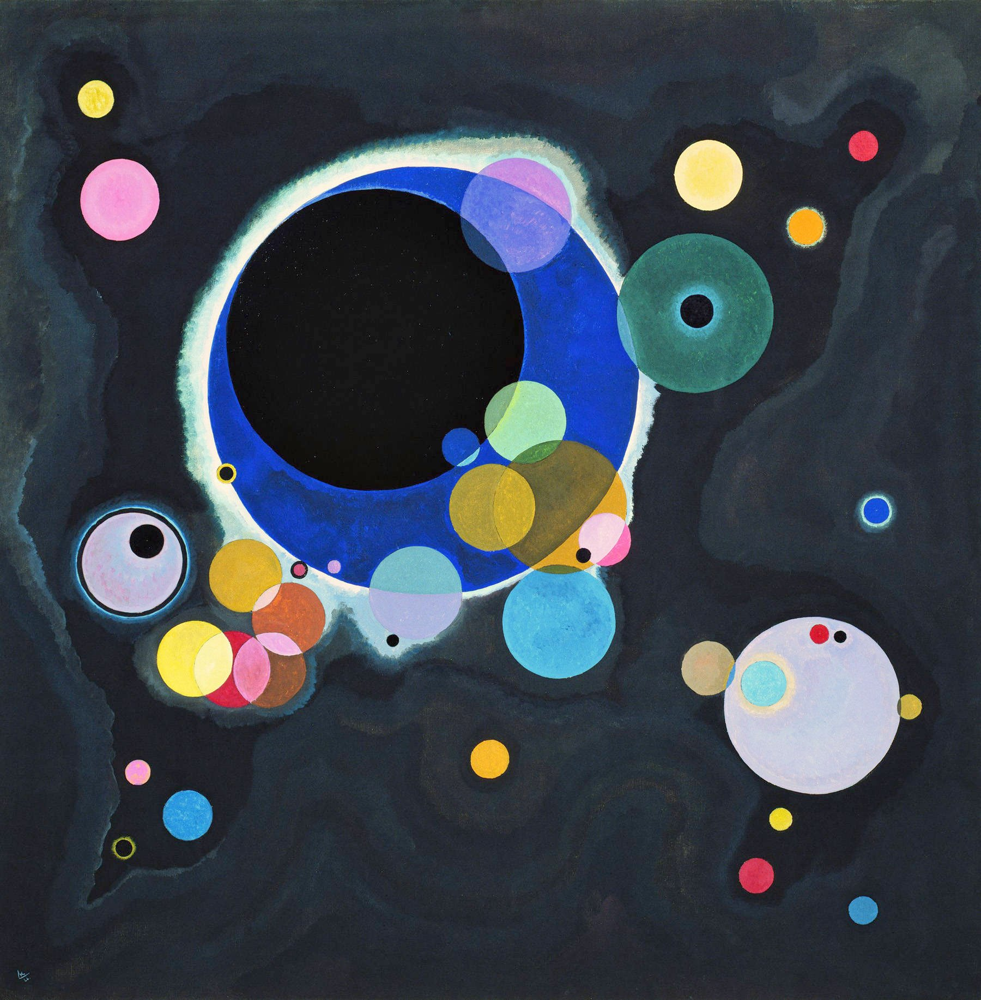

By 1926, at sixty, Kandinsky was teaching painting as if it were geometry. At the Bauhaus, he told his students that every color is born with its own shape and temperament: yellow is a triangle, sharp and expanding outward; red is a square, stable and grounded; blue was always meant to be a circle — the most concentric, the most inward color there is. That same year he painted an entire canvas of circles: against an ink-black field, dozens of overlapping, semi-transparent disks float like scattered fragments of a universe. He called it, plainly, Several Circles (Einige Kreise) — a name almost too modest for what may be the purest experiment of his entire color theory.
Kandinsky set himself an almost punishing rule for this canvas: circles only — no straight line, no triangle, no square anywhere. This wasn't a shortcut; it was a deliberate subtraction. If the shape itself never varies, what else can hold a composition together? His answer: size, position, and color. A massive cobalt-blue ring, its edge glowing with a halo of white, dominates the upper-left quadrant and encircles a pure black core — like an eclipse caught mid-motion. Around it, dozens of smaller disks, some solitary, some clustered and overlapping, thin out from center to corner, forming an asymmetrical field that still somehow holds together like gravity.
That density gradient — packed at the center, sparse at the edges — gives the canvas a clear visual weight without resorting to simple centering. The blue ring sits upper-left; a pale lavender-grey circle answers it from the lower right, and the eye keeps traveling back and forth across the near-empty dark space between them, as if watching two bodies pull at each other across a distance.
The most rewarding thing to look for here is what happens where circles overlap. Kandinsky treats every disk as a translucent layer, so wherever two meet, their edges naturally blend into a third color: yellow laid over pink yields a sliver of warm orange; green over blue produces a deep, hazy teal. It's close to watching subtractive color mixing happen live on the canvas, rather than pre-mixed on a palette — you see the moment two colors meet, not just the result.
The whole painting rests on a strong contrast between its near-black field and its saturated disks — the darkness makes every color read brighter than it would on white. And the sharpest single clash sits mid-canvas, where the cobalt ring meets a cluster of golden-ochre circles: near-complementary colors, sitting almost opposite each other on the color wheel. Cool base, warm accent, dark ground under saturated color — it's a formula that still works in poster design or an all-black outfit with one bright piece.
Kandinsky wasn't scattering circles by instinct. That same year, he published Point and Line to Plane (1926), his theoretical treatise laying out a full system pairing shapes with colors: the triangle with yellow, because both are sharp, expanding, aggressive; the square with red, stable and heavy; the circle with blue, "concentric, inward, most capable of carrying the spiritual." The vast blue ring that dominates this canvas is close to a visual manifesto of that theory — he gave the biggest, most commanding shape in the painting to what he considered the most perfect pairing of form and color.
Kandinsky experienced synesthesia — colors triggered sound for him. He described blue as a cello or organ, deep and sustained; yellow as a trumpet, sharp and shrill; black as total silence. That's the real reason he insisted on abstraction over representation: he wasn't painting objects, he was painting the emotion and "sound" that color and shape produce on their own — the canvas functions more like a score than a window.
Kandinsky insisted, repeatedly, that this painting refers to nothing at all — not the cosmos, not an eclipse, not a cell under a microscope, only the pure relationships between circles, color, and position. And yet nearly everyone who sees it for the first time blurts out some version of "are those planets?" That gap between the artist's restraint and the viewer's instinct to project meaning is exactly what makes the painting land: it proves the human eye can't help hunting for pattern and story, even facing nothing but shapes and hue. It's almost impossible not to read the upper-right pair of concentric circles as an eye staring back at you.
Abstract art gets dismissed as "meaningless" or "anyone could do that," but this painting argues the opposite — every circle's size, position, and transparency is a calculated decision. What moves people isn't a story being told; it's proof that color and shape alone, with no story at all, can still stop you in your tracks.
Wassily Kandinsky (1866–1944) was a Russian-born painter and one of the acknowledged pioneers of abstract art — a set of watercolors he made around 1910 is often cited as among the earliest purely abstract works in Western art history. In 1922 he joined the Bauhaus faculty, teaching color theory and "analytical drawing" until the school was shut down by the Nazi government in 1933, after which he emigrated to France for the rest of his life. Several Circles comes from his Bauhaus years, at the point where his theory of color and shape had fully matured.
Kandinsky has been dead for over eighty years and the painting is in the public domain. Several Circles is held at the Solomon R. Guggenheim Museum in New York — a collection deeply tied to his legacy, since the museum's early holdings were shaped by Hilla Rebay, a curator whose taste was formed directly by Kandinsky's own theories. The image used here comes from Wikimedia Commons' public-domain digitization.